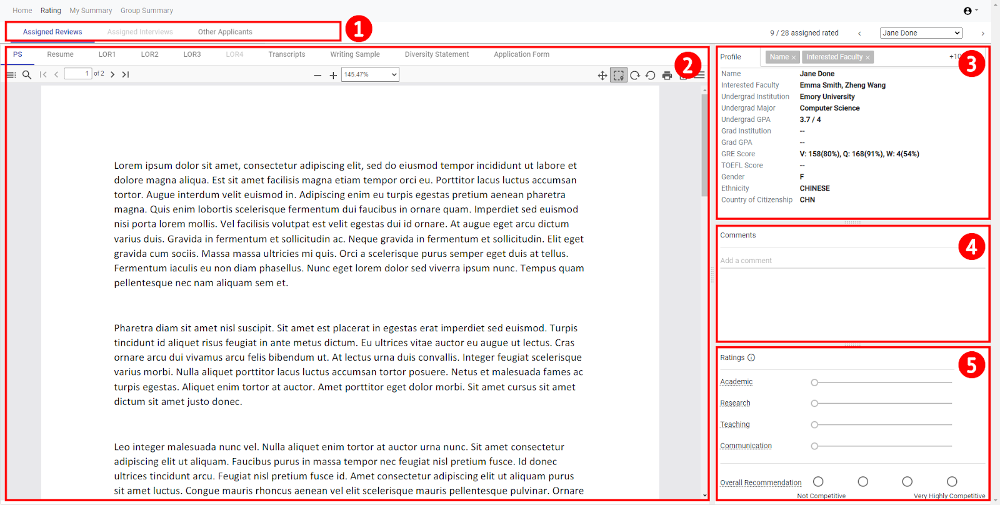
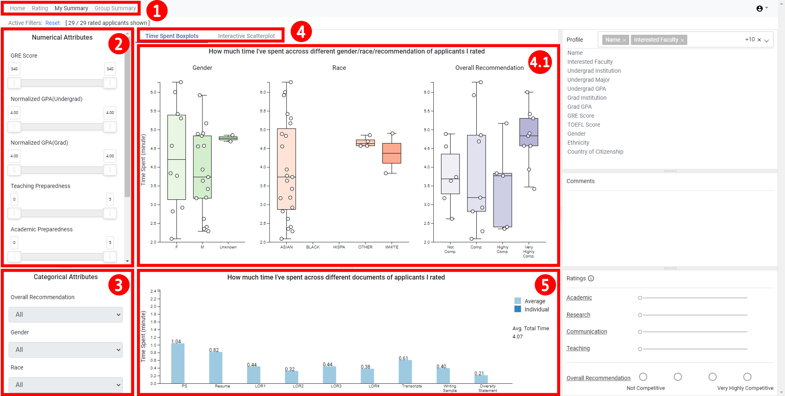
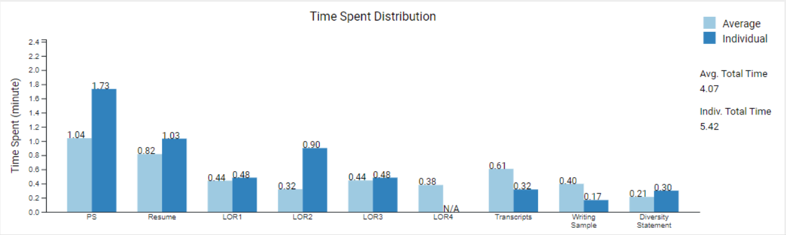
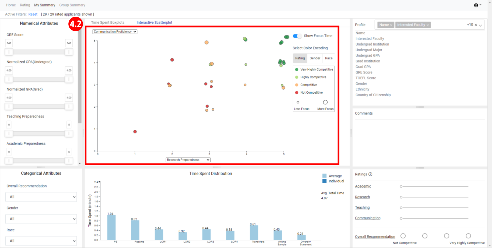

Vis4Grad Walkthrough Tutorial
Overview
There are three main pages in the Vis4Grad system:
- Individual Rating (1): review candidates’ application documents, leave comments, and provide ratings.
- My Summary (2): summarize and interactively analyze your individual evaluations of candidates across selected criteria.
- Group Summary (3): summarize and interactively analyze aggregated group evaluations of all candidates and make final decisions.
Individual Rating (1)

- Vis4Grad allows application evaluation to be divided among the review team. Applicant reviewers can see the assigned applicants to review, assigned interviews, and other applicants.
- Reviewers can navigate through application materials for the selected applicant by clicking any of the document links at the top of the window. Documents include personal statement (PS), resume, letters of recommendation (LOR), transcripts, and writing samples.
- The profile window provides an overview of candidate background attributes and statistics. By clicking an element in the profile window, such as Name, the multi-selection drop down bar will appear. This bar allows users to select individual attributes which populate the profile section and, if desired, hide attributes that you do not want to bias your decision.
- In the comments section, reviewers can add comments about the applicant, which can be viewed in later evaluation.
- The ratings section allows the rating of applicant’s academic, research, teaching, and communication qualifications. While hovering on the respective criteria, a description of the attribute will appear. More information about rating is available below.
Additional information about rating applications:
Each prospect will be evaluated based on the following four criteria:
- Academic Preparedness: Performance in CSI and other relevant STEM coursework that reflect an aptitude and readiness for success in CSI graduate courses and related academic processes.
- Research Preparedness: Well-articulated aspirations and demonstrated ability or potential to conduct advanced, high quality research in CSI-relevant domains.
- Teaching Preparedness: Relevant preparedness or experiences sufficient to TA at least one, preferably multiple, fundamental CSI course at the undergraduate or graduate level.
- Communication Proficiency: Ability to communicate clearly in English, verbally and written.
Each criterion will be evaluated on a 0-5 scale, as follows:
0: Clearly fails requirement
1: Likely fails requirement
2: Likely meets requirement
3: Clearly meets requirement
4: Likely exceeds requirement
5: Clearly exceeds requirement
The admissions process will classify each prospect into one of the following categories:
- Very Highly Competitive: exceeds all or most admission criteria
- Highly Competitive: exceeds some admission criteria (must meet all)
- Competitive: meets all admission criteria
- Not Competitive: fails to meet all or most admission criteria
My Summary (2)


- Users can navigate between Home, Rating, My Summary, and Group Summary pages by selecting the desired tab. Group Summary will be disabled until all individual ratings are completed.
- The Numerical Attributes window allows filtering on the interactive scatter plot (4.2) by numerical attributes such as GRE score, GPA, etc., as well as numerical ratings you have assigned for criteria such as Research Preparedness, Teaching Preparedness, etc.
- The Categorical Attributes window allows filtering on the interactive scatter plot based on overall recommendation, gender, and race.
- Navigation at the top allows you to go between the Time Spent Boxplots (4.1) and the Interactive Scatterplot (4.2).
- The box plot data visualization reflects the time spent analyzing applications, stratified by gender, race, and overall recommendation. Candidates are represented as dots on the box plot. Hovering on a dot populates the candidate’s profile, comments, and ratings. Clicking on a dot leads back to that candidate’s application portfolio in the Individual Ratings view.
- The Interactive Scatterplot allows users to compare all the applicants they have rated. Users can select different application criteria or ratings for the X- and Y-axes to facilitate comparison. Points can be color-encoded based on applicants’ gender, race, or overall recommendation and size-encoded to represent overall time spent on each applicant. Clicking on a dot leads back to that candidate’s application portfolio in the Individual Ratings view.
- Beneath the scatterplot is a bar chart visualizing the amount of time spent focusing on individual application components. When hovering on a point in the scatterplot, dark blue bars are added to the bar chart to show how the distribution of time for an individual applicant compares to the reviewer’s average (see image below).

Group Summary (3)
The Group Summary view is disabled in the system until all independent ratings have been completed. At that time, the system and tutorial will be updated to reflect the associated interactions.